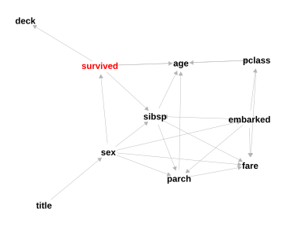
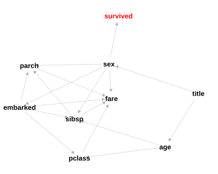
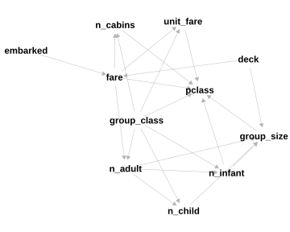

Kaggle Titanic - Machine Learning from Disaster dataset
Author
Matthew Nimmo
Published
September 24, 2023
Modified
May 27, 2026
Abstract
Bayesian Networks are a statistical modelling technique that represents the joint probability between variables. Mixed networks allow modelling of discrete and continuous variables but require that continuous variables are Gaussian and have linear relationships. Neither of which can be guaranteed when performing exploratory modelling. However, despite this restriction the technique can be used for exploratory modelling to gain insight into the data. Later, in modelling the data, any potential non-Gaussian and non-linearity in the data can be accounted for by adding additional variables to the Bayesian Network (Gaussian Mixture Models are great for this). The Titanic dataset is used to showcase the use of Bayesian Networks to focus Exploratory Data Analysis (EDA) on key data features to speed up the analysis. An added bonus is that a Bayesian Network can be trained on data that contain missing values.
Keywords
mining-ds-vault, data science, bayesian network
Introduction
On April 10 1912 the newly constructed British luxury passenger liner, the RMS Titanic, departed on its maiden voyage from Southampton in the United Kingdom to New York in the United States of America. The liner first crossed the English channel to Cherbourg France then back to Queenstown in Ireland before heading across the Atlantic Ocean to New York on April 11 1912. Passengers boarded the ship at Southampton, Cherbourg and then Queenstown.
The Titanic never reached its destination.
On April 14 1912, four days after departure, an iceberg was spotted and then struck the Titanic. Approximately two and a half hours after hitting the iceberg, the Titanic sank coming to rest on the ocean seabed at around 3,800m below the ocean surface and approximately 600km south-southeast off the coast of Newfoundland.
Some passengers survived, some did not.
The Kaggle Titanic - Machine Learning from Disaster knowledge competition challenges us to find patterns in the provided data that may help us understand why some passengers survived and others did not. This simple analysis uses the Kaggle Titanic data and is aimed at using Bayesian Networks for exploratory modelling and rapid data understanding.
For this analysis, rather than treating the problem as a prediction problem, I will be treating it as a missing value problem. I will be focusing primarily on exploratory modelling using Bayesian Networks. The idea here is to try and minimize the amount of exploratory data analysis that is done by exploiting Bayesian Networks to zoom in on key data features. Only the important relationships will be explored.
Bayesian Networks assume that numeric variables are continuous and follow a Gaussian distribution and that the relationship between numeric variables are linear. However, a Bayesian Network can still model data with non-Gaussian numeric variables and non-linear relationships. This can be done by converting all variables to factors but at a cost of losing information. Or, alternatively, adding latent discrete variables that deal with the two constraints. In exploratory modelling I will initially ignore these constraints but will endeavour to account for them in later versions of the Bayesian Network model.
Tools and techniques
The open source R environment for statistical computing was used (R Core Team 2023) along with the RStudio Integrated Development Environment and Quarto.
The R packages used for this analysis include tidyverse(Wickham et al. 2019) (data preparation and visualization), bnlearn(Scutari 2010) (training Bayesian Networks), ggdag(Barrett 2023) (visualization of directed acyclic graphs), ggthemes(Arnold 2021) (visualization plot themes), ggmosaic(Jeppson et al. 2021) (mosaic plots of cross tabular data), patchwork(Pedersen 2022) (composition of multiple ggplots), SEMgraph(Grassi et al. 2023) (visualization of Bayesian Networks), Amelia(Honaker et al. 2011) (missing value plot), RANN(Arya et al. 2019) (fast nearest neighbour search), knitr(Xie 2023) (markdown functionality), and quarto(Allaire 2022) (interface to the Quarto).
Two additional custom functions are used for plotting the data. A function for plotting Bayesian Networks and a function to add percent label to mosaic plots.
For larger projects or projects where it will take a long time to render the document then we would also consider using a workflow manager such as the R targets(Landau 2021) package. We would also consider using a workflow manager if the data is expected to change or we want to retain the machine learning (ML) models. For this project the models (Bayesian Networks) that are generated are project artefacts that are used to explore the data. They are not required for any other purpose other than for use in this analysis.
The Titanic dataset
The Kaggle Titanic competition dataset consists of two separate comma delimited (CSV) data files - train.csv and test.csv. Both data files were loaded and combined into a single data frame. The variable names were converted to lower case.
We can combine the training and test data into a single data set if we are only interested in data exploration. If we are modelling the data using machine learning (ML) then we would keep the two data separate. We would use the training data for training an ML model and the test data to evaluate the model. I am only interested in data exploration so I will break the general rule of splitting the data and instead combine them. As the goal for this project is data exploration and data understanding.
The data contains 12 variables of which 7 (passengerid, survived, pclass, age, sibsp, parch, and fare) are numeric and 5 (name, sex, ticket, cabin, and embarked) are discrete character variables. The passengerid variable is not relevant for data analysis and modelling as it is just a row identification number. Of the numeric variables only two, fare and age, appear to be continuous while survived is a binary variable, sibsp and parch are count variables, and pclass a factor.
Show code
str(a_titanic)
'data.frame': 1309 obs. of 12 variables:
$ passengerid: num 1 2 3 4 5 6 7 8 9 10 ...
$ survived : num 0 1 1 1 0 0 0 0 1 1 ...
$ pclass : num 3 1 3 1 3 3 1 3 3 2 ...
$ name : chr "Braund, Mr. Owen Harris" "Cumings, Mrs. John Bradley (Florence Briggs Thayer)" "Heikkinen, Miss. Laina" "Futrelle, Mrs. Jacques Heath (Lily May Peel)" ...
$ sex : chr "male" "female" "female" "female" ...
$ age : num 22 38 26 35 35 NA 54 2 27 14 ...
$ sibsp : num 1 1 0 1 0 0 0 3 0 1 ...
$ parch : num 0 0 0 0 0 0 0 1 2 0 ...
$ ticket : chr "A/5 21171" "PC 17599" "STON/O2. 3101282" "113803" ...
$ fare : num 7.25 71.28 7.92 53.1 8.05 ...
$ cabin : chr NA "C85" NA "C123" ...
$ embarked : chr "S" "C" "S" "S" ...
The variable fare contains a value of zero - this suggests that the passenger had a free ticket. What does a value of 0 for fare represent? These values are assumed, for the moment, to be invalid and are therefore replaced with a missing value.
Show code
summary(a_titanic)
passengerid survived pclass name
Min. : 1 Min. :0.0000 Min. :1.000 Length:1309
1st Qu.: 328 1st Qu.:0.0000 1st Qu.:2.000 Class :character
Median : 655 Median :0.0000 Median :3.000 Mode :character
Mean : 655 Mean :0.3838 Mean :2.295
3rd Qu.: 982 3rd Qu.:1.0000 3rd Qu.:3.000
Max. :1309 Max. :1.0000 Max. :3.000
NA's :418
sex age sibsp parch
Length:1309 Min. : 0.17 Min. :0.0000 Min. :0.000
Class :character 1st Qu.:21.00 1st Qu.:0.0000 1st Qu.:0.000
Mode :character Median :28.00 Median :0.0000 Median :0.000
Mean :29.88 Mean :0.4989 Mean :0.385
3rd Qu.:39.00 3rd Qu.:1.0000 3rd Qu.:0.000
Max. :80.00 Max. :8.0000 Max. :9.000
NA's :263
ticket fare cabin embarked
Length:1309 Min. : 0.000 Length:1309 Length:1309
Class :character 1st Qu.: 7.896 Class :character Class :character
Mode :character Median : 14.454 Mode :character Mode :character
Mean : 33.295
3rd Qu.: 31.275
Max. :512.329
NA's :1
The variable pclass contains the unique values: 3, 1, and 2.
The variable sibsp contains the unique values: 1, 0, 3, 4, 2, 5, and 8.
The variable parch contains the unique values: 0, 1, 2, 5, 3, 4, 6, and 9.
The variable embarked contains the unique values: S, C, Q, and NA.
The variable cabin contains 187 values.
Show code
unique(a_titanic$cabin)
The cabin variable is a composite of deck and room number. For some passengers cabin is a list of more than one deck and room number (minimum=1; maximum=4). For these passengers, the list of cabins is assumed to be for groups of passengers that are travelling on the same ticket but are split across multiple cabins.
The name variable is a composite of surname, title, first name, [middle name]. The variable surname maybe of use to identify family members who will be in close proximity to each other and will likely move as a group during the event. It is hypothesized that family group and possibly group size may be a factor in predicting survival. It is likely that family name will not be unique. First name and middle name are assumed to have no relationship with survival - why should it? However, title may be of use as it is an identifier of seniority (age) and sex.
The combined data contain 11% missing values (Figure 1). Majority of the missing values are found in the cabin (and deck), survived, and age variables. A small number of missing values are found in fare (including replaced 0 values) and embarked. It is likely that age could be imputed using a persons title while embarked, deck, and fare could be imputed using ticket.
Figure 1: Map of the missing values in the Titanic dataset.
Initial data preparation
The implementation of Bayesian Networks in R in the bnlearn package requires that discrete character variables are factors. The variables embarked and sex were converted to factors. The variables pclass, survived, sibsp, and parch are kept as numeric for now but may need to be converted at a later stage in the analysis. Also, a Bayesian Network can be trained using data that contain missing values - there is no need to arbitrarily impute missing values in the training data. The trained Bayesian Network can be used to impute the missing values. Or, alternatively, the training data with all missing values imputed can be returned and used.
Initial Bayesian Network trained on the pre-processed Titanic data
The observed variables survived, pclass, sex, age, sibsp, parch, embarked, and fare were included in exploratory modelling using Bayesian Networks. The variable passengerid was excluded as this variable only identifies the passenger data (row) which is required for generating the submission file. The variables name and cabin are composite variables and have been excluded. However, two additional variables title and deck were constructed from name and cabin respectively and were included.
To gain insight into the missing value mechanism, additional indicator variables were added to the data identifying missing values.
From the Bayesian Network trained with missing value variables included, the missing values for deck, age, and fare are missing at random (Figure 2). Missing values for deck are dependent on survived, embarked, fare, and pclass. Missing values for age are dependent on embarked, pclass, and missing.fare. And missing values for fare are dependent on survived.
The retrained Bayesian Network (without the missing value variables) suggests surviving the sinking of the Titanic depends on age, sex, pclass, sibsp, and deck (Figure 3). The direction of the edges are ignored for now.
Interestingly, deck is not connected to fare or pclass in the Bayesian Network but is linked to survival. It is expected that top decks would be occupied by first class passengers and the lowest decks occupied by third class passengers with the top decks being more expensive than the lower decks. This lack of correlation is likely the result of the large number of missing values in deck and bias in the data. Further processing of the ticket variable could be used to impute some or all of the missing values for deck and fare.
Survival based on what deck you were on is likely the result of crowding during muster. Top decks being closer to the lifeboats would likely result in passengers in cabins on the top decks being at the front of the queue and more likely to get on one of the few lifeboats available. Passengers on the lower decks, third class passengers, would likely be at the back of the queue and likely be stuck on stairs and in corridors inside the cruise liner making it difficult to get to a lifeboat.
The connection between age and pclass is interesting and likely reflects that older passengers are likely to be wealthier and more likely to pay for a better cabin in first or second class. The connection between embarked with sex, and pclass is likely coincidental and could be and indicator of bias in the data. The connection between sex and fare is interesting - do females with children pay more than male passengers without children? Unexpectedly, the variable title is only connected to sex and not connected to age.
Show code
plot_bn(titanic_bn1$fitted, highlight="survived")

Figure 3: Initial Bayesian Network.
Visual exploratory analysis
Male passengers had a very low chance of survival while females had a very high chance of survival (Figure 4).
Figure 4: Mosaic plot of survived by sex (Titanic dataset).
Table 1: Cross table counts of sex by survival.
Show code
table(b_titanic$sex, b_titanic$survived)
The box plot of age by title (extracted from name), clearly shows a strong relationship between age and title (Figure 5). Because of this strong relationship, the connection between title and age will be enforced using a white-list when training the initial Bayesian Network. Title is also strongly related to sex except for the title Dr where it can refer to either a male or female.
Figure 5: Box plot of age by title (Titanic dataset).
Table 2: Cross table counts of sex by Title.
Show code
table(b_titanic$sex, b_titanic$title)
Passengers in the 15 to 40 age group are more likely to have a sibsp of less than 4 and parch less than 3 while passengers aged over 40 are more likely to have 3 or more parch (Figure 6). First class passengers are likely to be older adults (median age of around 40), while third class passengers are younger adults (median age of around 25).
Figure 6: Box plot of sibsp, parch, and pclass by sex (Titanic dataset).
Plotting survived (cumulative) by age highlights five distinct age groups with different rates of survival (Figure 7). Ages between 0 to 6 (baby, infant) and 15 to 40 (adolescent, young adult) have the highest rates of survival. Being older than 60 (elderly) has a very low chance of survival. Chances of survival decrease with increasing age above 40.
Figure 7: Cumulative plot of survived by age (Titanic dataset).
Chances for survival if aged less than 6 (Infant) is high at around a 70% chance of survival (Figure 8). Chances drop to 44% for child age (ages 6 to 15), and to 39% for young adult (ages 15 to 40) and adult (ages 40 to 60). If you were elderly (>60) then you had a very low chance (23%) of survival.
When splitting by sex, we see that there is very little difference in survival rates for the first two age groups (0 to 15) (Figure 9). But, above the age of 15, survival rates start to diverge for females and males. Females have a higher rate of survival than males. We also see that the age group of 6 to 15 expands to be from age 6 to around age 20 with survival rates slowly lifting from around age 20 to 25.
Figure 9: Cummulative plot of survived by age split by sex (Titanic dataset).
If you were female and were a child aged between 6 to 15 your chances of survival were lower than if you were female of any other age (Figure 10). If you were male, your chances of survival were slightly better if you were a child (ages 6 to 15) or an infant (ages <6).
Figure 10: Mosaic plot of survived by survived and sex (Titanic dataset).
Passengers with a sibsp of 1 have roughly a 50-50 chance of survival (Figure 11). Passengers with a sibsp of 3 or 4 have a very low chance of survival (<25%) while passengers with a sibsp greater than 4 had no chance. For those passengers with no sibsp, the chances of survival were 1 in 3 (35%).
Figure 11: Mosaic plot of survived by sibsp (Titanic dataset).
Table 4: Cross table counts of survived by sibsp.
Show code
table(b_titanic$survived, b_titanic$sibsp)
First class passengers are more likely to have survived with a 2 in 3 chance of survival (63%), than 2nd and 3rd class passengers (Figure 12). Survival chances drop to roughly a 50-50 chance for 2nd class passengers while 3rd class passengers are the unlucky lot with only a 1 in 4 chance of survival (24%).
Figure 12: Mosaic plot of survived by pclass (Titanic dataset).
Table 5: Cross table counts of survived by pclass.
Show code
table(b_titanic$survived, b_titanic$pclass)
Passengers staying on decks B, D, and E had the highest chances of survival at roughly a 3 in 4 chance of surviving (~75%) (Figure 13). Passengers on decks A, F, and G, had slightly lower chances of survival with passengers on deck A having the lowest chances of survival (discounting deck T). Why do passengers from the top deck A have the lowest chances of survival? Is is because of sex?
Figure 13: Mosaic plot of survived by deck (Titanic dataset).
Passengers on deck A are mostly male which have a low chance of survival (Figure 14). Interestingly there are no male passengers listed for deck G in the training data. This is likely to bias any analysis that includes the deck variable.
But if you were male and on Deck E then your chances of surviving were better than if you were male and on any other deck (Figure 14). If you were male and on deck A then you chances of survival were slightly better than being on decks B, F, and C.
Figure 14: Mosaic plot of survived by deck for males (Titanic dataset).
The indirect association of embarked with survived is through the direct association with sex, sibsp, and pclass which are directly related to survived.
Nearly 2/3 rds of the passengers that departed from Southampton (S) and Queenstown (Q) did not survive.
Passengers that embarked from Southampton (“S”) have the least chances of survival while those that embarked from Cherbourg (“C”) have the highest chances of survival (Figure 15). Why?
Figure 15: Mosaic plot of survived by embarked (Titanic dataset).
Majority of the passengers departing from Queenstown were 3rd class (92%) while most of the passengers departing from Southampton were 3rd class (58%) and male (68%) (Figure 16). Is this coincidence? Or, is there some hidden feature that explains the significant differences in sex, sibsp, and pclass depending on which port the passenger departed from?
Figure 16: Mosaic plot of pclass and sex by embarked (Titanic dataset).
Adjust initial Bayesian Network using edge constraints (white and black lists)
Links between variables in Bayesian Networks can be constrained using whitelists and blacklists. Whitelists define the links that must occur in the trained network. Blacklists define links that cannot be included in the trained network. A whitelist is used to ensure that the link between title and age exists in the trained Bayesian Network. A blacklist is used to enforce edges connecting with survived are directed toward survived.
The trained Bayesian Network with the constraint that the variables title and age are linked is shown in Figure 17. The consequence of forcing the connection results in the variable age no longer being connected directly to survived. But age is indirectly connected to survived via sibsp and pclass. The only direct effect on survived is sex.
Show code
plot_bn(titanic_bn2$fitted, highlight="survived")

Figure 17: Bayesian Network (BN2).
Process the tickets variable
The ticket variable contains information that groups observations (families) and defines the common values for embarked, cabin or cabins, and fare for those groups. Additionally, the ticket variable could also be used to help determine the composition of the group or family (such as mother and young child, brothers, sisters, alone).
The titanic data is grouped by ticket and then summarized to include the additional variables n_adult, n_child, n_infant, group_size, group_class (derived from group_size), n_decks (as some cabin values are a list of cabins), and unit fare. The unit fare is calculated by dividing the fare by group size for that ticket. Where cabin includes a list of more than 1 cabin (example ticket 695: B51 B53 B55), it is assumed that the group is split across the cabins. However, in the case of a ticket with only one passenger, the multiple cabins listed may be because the passenger changed cabins during the voyage.
Note that some cabins are listed with a prefix of “F”, for example “F G63” (ticket 348121). What does the prefix “F” mean?
The tickets data a_tickets is further processed to select only those observations that have a value for deck, embarked, and fare (unit fare). This data is used for filling in missing values for deck and fare.
The price of a ticket (fare) is strongly dependent on the number of cabins, deck, and to a less extent embarked (Figure 18). Interestingly the fare for cabins on Deck A is less than the fare for cabins on Decks B and C and is similar to Decks D and E. Cabins on Deck G have the lowest fare. The ticket price is lowest when embarking from Queenstown, and high when embarking from Cherbourg. Why is embarking from Southampton cheaper than embarking Cherbourg when the journey from Cherbourg is shorter than Southampton?
Figure 18: Boxplots of fare by embarked, deck, and number of cabins.
The price of a ticket (fare) is strongly dependent on the number of adults, children, and infants (Figure 19). As the number of passengers on a ticket increases, the fare increases. Is this relationship linear? Note that the fare for seven passengers is lower than the median fare for three or more passengers. Is this an error in the data or a discount for such a large group or is the group squeezed into a small number of cabins?
Figure 19: Boxplots of fare by number of adults, children, and infants.
To impute missing values for deck, a simple nearest neighbour estimator was used using the ticket fare. Would it be possible to infer a pricing model from the data? This will be left for a separate data science project.
A Bayesian Network can be trained on the tickets data which could be used for imputing missing values and gaining further insights into the pricing model.
The Bayesian Network trained on the tickets data (Figure 20) indicates that fare is directly associated with deck, embarked, number of adults, and passenger class. Why is the number of infants, group_class, group_size, and number of cabins connected with passenger class. Passenger class is related to the cabin (deck) and consequently ticket fare, not group size or number of cabins. Although, it is more likely that first class passengers with a large group size will occupy more cabins than third class passengers.
Show code
plot_bn(tickets_bn1$fitted, highlight="survived")

Figure 20: Bayesian Network (BN3).
Add processed tickets data to the Titanic data
The processed tickets data (b_tickets) was merged with the processed Titanic data (b_titanic) by ticket to generate the c_titanic data frame. The variable deck in b_titanic was replaced by the values in b_tickets. The variables group_size, group_class, n_cabins, unit_fare, deck, n_infant, n_child, and n_adult from the b_tickets data were added to the b_titanic data.
Retrain Bayesian Network with the additional variables from tickets
A Bayesian Network was trained on the c_titanic data with the inclusion of the additional variables derived from processing the tickets variable. A whitelist was used to constrain the network to include the links title -> age, deck -> fare, and embarked -> fare.
The Bayesian Network trained on the processed Titanic data c_titanic is illustrated as a directed acyclic graph shown in Figure 21. Note that survived is now only directly associated with sex and group_class.
The mosaic plot of survived by group_class (Figure 22) is similar to the mosaic plot of survived by sibsp (Figure 11). A small group size has the highest chance of survival at almost 60%. All other group sizes have similar chances of survival at around 25%. The high probability of survival for a small group size is likely due to the small groups made up of a mother and child (or infant) being more likely to survive.
Figure 22: Mosaic plot of survived by group_class (processed Titanic dataset).
Stories of survival
Surviving the sinking of the Titanic may have involved a bit.
The trained Bayesian Network can be used to explore relationships between variables in the Titanic data set and gain insight into surviving the catastrophe. One novel way of doing this is through fictitious or hypothetical stories.
You are a young mother aged 34 with two children, one girl aged 3 and one boy aged 8. You are travelling with your two children, your mother and your older brother. Your mother and brother are in adjacent cabins. After a long day looking after your children and socializing you are woken from a heavy sleep by your kids and a knock on the door. You open the door and it is your mother and brother standing in the corridor with other passengers. Your mother looks concerned, your brother is calm. You are told to get the kids and muster. Something has happened. As a group of five you all pile into the corridors along with other passengers and head to the muster point. An hour or so has passed waiting at the muster point, people are calling all mothers with young children to get on one of the lifeboats. Your only allowed to take your daughter on the lifeboat. What do you do? Your choice determines whether you survive or not. Most mothers chose to get on the lifeboat with their child.
Show code
bnlearn::cpquery(titanic_bn3$fitted,event = (survived =="Yes"),evidence = (sex =="female"& age >=30& age <40))
You are an elderly male aged 64 years. You are travelling alone. You boarded the Titanic at Southampton looking to catch-up with family that are already in the United States of America (USA). After dining at the captains table you settle into your cabin on deck B and fall asleep. At just before midnight you are suddenly awoken. What the … About five minutes later the captain tells everyone to muster. Unfortunately you don’t get on a lifeboat, you don’t get to see your family in the USA. You don’t survive.
You are a young adult male aged 21 years. You are travelling alone. You boarded the Titanic at Queenstown looking to emigrate to the United States of America (USA) to start a new life. You have little money and spent little on the fare. Unfortunately you never make it to the USA. Somehow you manage to survive, barely. The odds are against you, a 1 in 10 chance.
Show code
bnlearn::cpquery(titanic_bn3$fitted,event = (survived =="Yes"),evidence = (sex =="male"& age >18& age <25& embarked =="Queenstown"& group_class =="Alone"& fare <5))
You are a young adult female aged 25 years. You just got married. You are travelling with your husband aged 27 years. You boarded the Titanic at Cherbourg in France for the trip of a life time. You have been looking forward to spending time with your husband exploring the USA for 2 months while on honeymoon. You have been partying with your husband, had some drinks in the bar till late at night. You are still in the bar listening to music and drinking beer. Your husband looks at you - What was that? The engines stopped. It is just before midnight. There is some commotion going on and talk of an iceberg hitting the ship. Nope, it’s all good, the crew has got this, the ship could not possibly hit an iceberg. You continue enjoying your drink. After sometime the crew tells you and your husband that you must muster. You ignore their directions. An hour or two passes and you hear people saying abandon ship, abandon ship. You and your husband dismiss it. That was your mistake. Unfortunately you did not get to enjoy your honeymoon. You did not survive. You could have survived if only you followed instructions, maybe. The modelling suggest that a young adult female travelling with one other has a moderate chance of survival. Your partner on the other hand, may not have survived. His chances of survival were lower than yours.
Show code
bnlearn::cpquery(titanic_bn3$fitted,event = (survived =="Yes"),evidence = (sex =="male"& age >22& age <29& embarked =="Cherbourg"& parch >1.9& parch <2.1& sibsp <0.1))
Show code
bnlearn::cpquery(titanic_bn3$fitted,event = (survived =="Yes"),evidence = (sex =="female"& age >22& age <29& embarked =="Cherbourg"& parch >1.9& parch <2.1& sibsp <0.1))
This last story highlights deficiencies in the preparation of the data. It is not easy to determine what the probability is of a couple or an entire group with a certain composition surviving using the data as it is. For example to determine if a group consisting of a mother and child would require selecting observations where (sex == “female” and n_adult == 1 and n_child+n_infant == 1) or (n_adult == 1 and n_child+n_infant == 1). But this would also select children where the parent was male. However, the tickets data could be used. For this, the preparation of the tickets data would require the inclusion of the number of survivors in the group and that there are no missing values for survived.
Based on the predictions from the Bayesian Network, only 20.5% of the couples survived the catastrophe.
Add latent variables to simplify Bayesian Network
A latent variable, is a variable that has no values, it is unobserved. A latent variable maybe inferred from the data or defined from expert knowledge of the causal effects. The latent variable can be discrete or continuous.
Bayesian Networks can model both discrete and continuous latent variables by including a variable in the training data that has no values and is of the desired type. Latent variables in Bayesian Networks can be used to model non-linear relationships and non-Gaussian distributions. A Gaussian Mixture model is a good latent variable model that can be used for this purpose.
For the Titanic data set, three latent variables are inferred from the relationships between the variables. Latent Variable 1 is connected to survived, parch, sibsp, and group_class and represents group composition (family). Latent Variable 2 is connected to survived, age, age_class, and sex and represents individual characteristics, albeit limited. Latent Variable 3 is connected to survived, deck, passenger class, and group_class and represents the proximity of the passengers cabin to the life boats (closer to the boats = closer to getting on the boats <- front of the queue). The directed acyclic graph of the proposed Bayesian Network with latent variables is shown in Figure 23.
Figure 23: Directed Acyclic Graph showing the connections of the three latent variables with Titanic data variables.
Latent Variable 1 (LV1)
A Bayesian Network (titanic_bn_lv1) was trained using the variables survived, sibsp, parch, group_size, and group_class and a single discrete latent variable LV1. The latent variable 1 is assumed to have seven distinct levels or groups. A whitelist and blacklist was used to constrain the connections between variables to match the proposed links shown in Figure 23.
Table 7: LV1 Bayesian Network probabilities for LV1 node.
survived
1
2
3
4
5
6
7
No
0.49
0.07
1
0.92
0.6
1
0.65
Yes
0.51
0.93
0
0.08
0.4
0
0.35
Latent Variable 2 (LV2)
A Bayesian Network (titanic_bn_lv2) was trained using the variables survived, age, sex, age_class and a single discrete latent variable LV2. The latent variable 2 is assumed to have three distinct levels or groups. A whitelist and blacklist was used to constrain the connections between variables to match the proposed links shown in Figure 23.
Table 9: LV2 Bayesian Network probabilities for LV2 node.
survived
1
2
3
No
0.65
0.84
0.99
Yes
0.35
0.16
0.01
Latent Variable 3 (LV3)
A Bayesian Network (titanic_bn_lv3) was trained using the variables survived, pclass, deck, group_class and a single discrete latent variable LV3. The latent variable 3 is assumed to have five distinct levels or groups. A whitelist and blacklist was used to constrain the connections between variables to match the proposed links shown in Figure 23.
Table 11: LV3 Bayesian Network probabilities for LV3 node.
survived
1
2
3
4
5
No
0.86
0.78
0.8
0.71
0.27
Yes
0.14
0.22
0.2
0.29
0.73
Final Bayesian Network
The final Bayesian Network for this project is trained on the c_titanic data with latent variables added. The model is based on the directed acyclic graph defined in Figure 23.
The term “final” in this context is used to identify the last Bayesian Network for this Titanic data analysis project trained on the processed data. Final is not meant to suggest that it is the best and final model that could be trained and that there are no more improvements that could be made. Unfortunately, the term “final” does invoke the perception that there is no continuous improvement or continuous development. Data analytics projects are continuous improvement projects with no “final” model. This “final” model could be further improved.
Bayesian Networks can be used to generate synthetic data that replicate the statistical properties of the data used to train the network. The synthetic data could then be used in training regression or classification models with the original data used for model validation.
Show code
c_titanic_synthetic <- bnlearn::rbn(titanic_bn_final, n =10000)
Conclusion
Bayesian Networks were used to explore the Titanic data from the Kaggle Titanic competition. A “final” Bayesian Network was constructed that included three unobserved features (latent variables) that directly effect survival. Latent Variable 1 is connected to survived, parch, sibsp, and group_class and represents group composition (family). Latent Variable 2 is connected to survived, age, age_class, and sex and represents individual characteristics. Latent Variable 3 is connected to survived, deck, passenger class, and group_class and represents the proximity of the passengers cabin to the life boats. The three latent variables account for the relationships between the observed variables and directly effect survival.
Further processing of the ticket variable could be done to better express the composition of the ticket. A group classification could be added to help identify observations that are mother-child, brother-brother, brother-sister, sister-sister, mother-father-2*child, mother-father-3*child, mother-father-4*child, group-of-friends, alone, and other. The number of group members that survived could also be added but will need to consider missing survival status.
A synthetic data set was generated from the “final” Bayesian Network which can be used for future classification modelling. The synthetic data will need to be validated to check that the statistics of the original data is replicated. The synthetic data may need to be regenerated to produce a balanced data set for classification modelling.
Arya, Sunil, David Mount, Samuel E. Kemp, and Gregory Jefferis. 2019. RANN: Fast Nearest Neighbour Search (Wraps ANN Library) Using L2 Metric. https://CRAN.R-project.org/package=RANN.
Grassi, Mario, Fernando Palluzzi, and Barbara Tarantino. 2023. SEMgraph: Network Analysis and Causal Inference Through Structural Equation Modeling. https://CRAN.R-project.org/package=SEMgraph.
Honaker, James, Gary King, and Matthew Blackwell. 2011. “Amelia II: A Program for Missing Data.”Journal of Statistical Software 45 (7): 1–47. https://doi.org/10.18637/jss.v045.i07.
Landau, William Michael. 2021. “The Targets r Package: A Dynamic Make-Like Function-Oriented Pipeline Toolkit for Reproducibility and High-Performance Computing.”Journal of Open Source Software 6 (57): 2959. https://doi.org/10.21105/joss.02959.
R Core Team. 2023. R: A Language and Environment for Statistical Computing. R Foundation for Statistical Computing. https://www.R-project.org/.
Scutari, Marco. 2010. “Learning Bayesian Networks with the bnlearnR Package.”Journal of Statistical Software 35 (3): 1–22. https://doi.org/10.18637/jss.v035.i03.
Wickham, Hadley, Mara Averick, Jennifer Bryan, et al. 2019. “Welcome to the tidyverse.”Journal of Open Source Software 4 (43): 1686. https://doi.org/10.21105/joss.01686.
Xie, Yihui. 2023. Knitr: A General-Purpose Package for Dynamic Report Generation in r. https://yihui.org/knitr/.